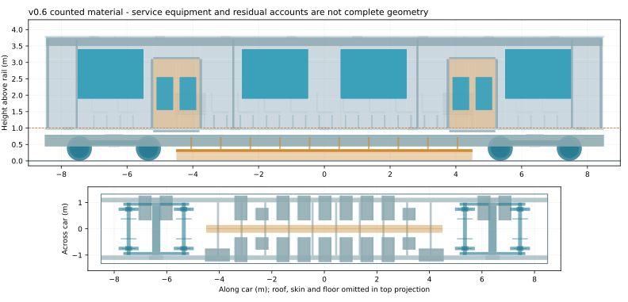
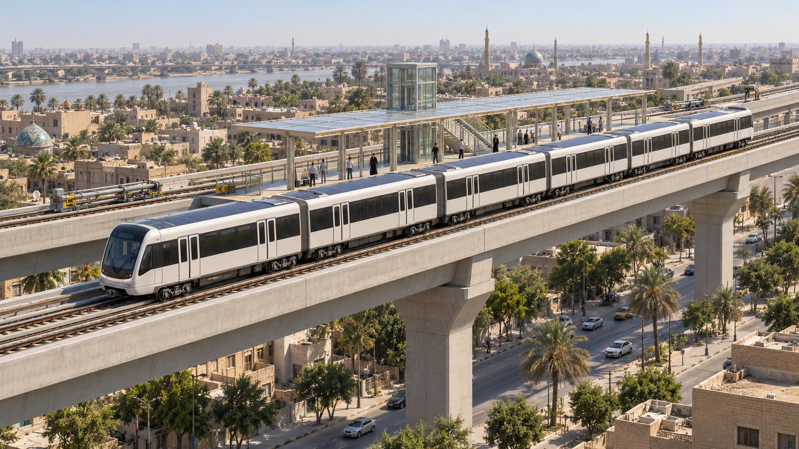
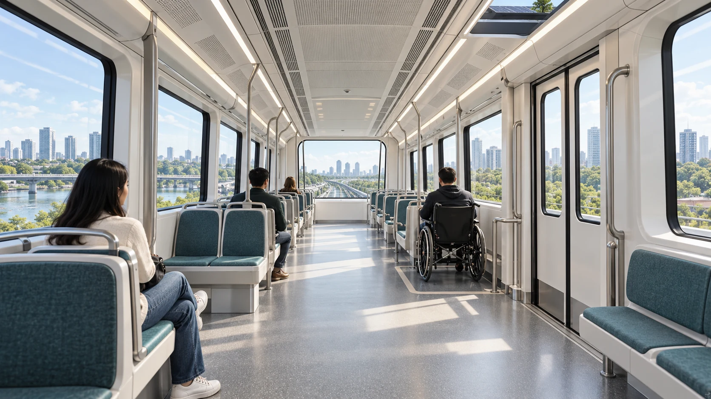
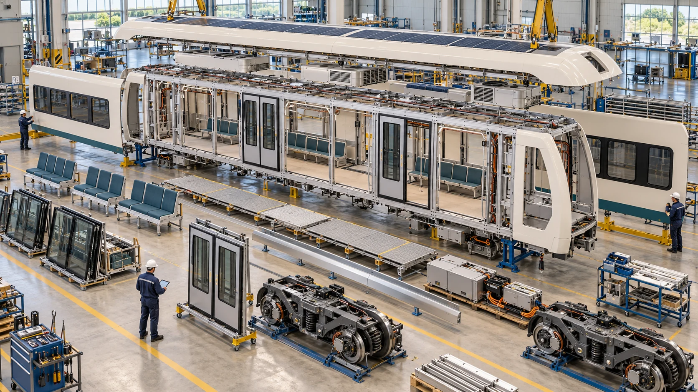
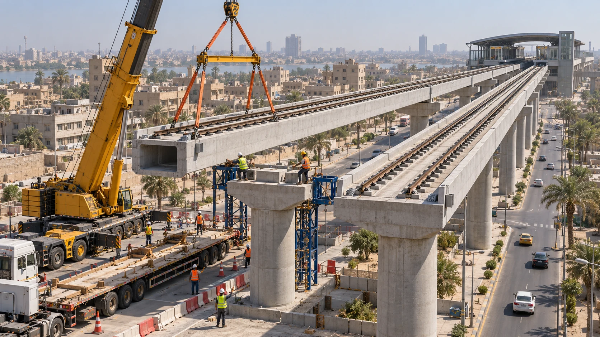
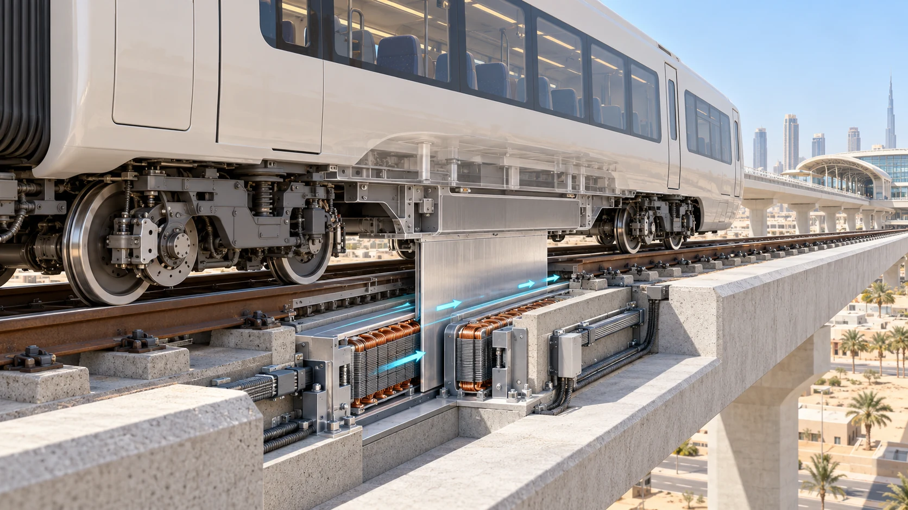

OpenSourceRail connects city planning, railway engineering, manufacturing, construction, business workflows and open train-control software. Its purpose is to build local design authority, production and repair capability while comparing whole-life cost and passenger service. These are project objectives; economic superiority and physical qualification have not been demonstrated.
The selected reference is a station-powered, wheel-supported railway with 6 cars of 17 m. Each car is planned for 44 fixed seats and 2 wheelchair places, with no planned standing. Passive steel-wheel bogies run on conventional rails carried by concrete guideway. Double-sided station linear induction motors act on passive onboard aluminium secondaries. The vehicle has no normal-service traction motor, traction battery or suspension magnet. Independent braking, service power, protection and rescue remain required.
The service targets are 72 km/h launch speed, 120 seconds headway and 35 seconds dwell. The resulting 8,280 passengers/hour/direction is capacity arithmetic, not a demonstrated protected service. The selected candidate is a development reference without manufacturing or passenger-operation release.

Partial stock geometry and equipment accounts; not a complete installed or approved train.
These illustrations show the intended passenger experience, local assembly and construction approach. They are concept artwork. Detailed dimensions, accessibility, equipment placement and construction methods require controlled engineering records; the images do not establish physical performance.

A wheel-supported train on conventional rails beside an elevated station, with roof solar panels and a platform canopy.

A bright seated cabin with a wheelchair space beside the doors. Detailed seat counts, boarding clearances and restraints require the controlled layout.

Workshop assembly concept showing the body, roof, glazing, doors, seating and bogies as separate assemblies.

Illustrated precast-beam erection above an urban corridor. Lifting arrangements, temporary stability and site protection need their own engineered plans.

Passive wheel bogies support the car while station-side double-sided LIM primaries act on a passive aluminium fin. Blue arrows illustrate the propulsion concept.
The planning workspace supports local
geographic, route, stop, service and OD proposals. ./osr plan compile writes an
immutable handoff bound to the selected candidate, and ./osr plan verify
checks its sources and identities. The handoff contains proposals only; route
performance, procurement quantities, construction schedules and full city costs
remain held until candidate-specific evidence is available. Planning revisions
do not grant movement authority.
The coordinated design workflow propagates one candidate through geometry, mass, engineering analysis, BOM, CAD/IFC, manufacturing, procurement, construction and controls. The current export manifest and delivery package index bind research records to candidate identities. ERPNext exports are disabled drafts. Complete installed equipment, an available operating motor map, force-driven journeys and fully supported lifecycle costs remain open.
ERPNext and Frappe HR support draft business, workforce, procurement, manufacturing, quality and maintenance workflows. FUXA and the gateway support equipment observations, alarms, history and review-linked records. Site masters, permissions, device bindings and reviewed imports require deployment-specific configuration. These services do not commission a railway or supply movement authority.
Cost scenarios use two 8-hour shifts for production and civil work. Operations are modelled at two shifts for 16/18-hour service and three shifts for a 24-hour case. These are planning assumptions, not approved staffing or operating plans.
Run ./install.sh, then ./osr status and ./osr workbench. Use
./osr design railway plan for coordinated research, ./osr build to refresh
current evidence and ./osr verify to check sources and payloads. ./osr sim baghdad reports the current city-evaluation hold.
Project introduction · Current engineering · Architecture · Roadmap · Candidate delivery · Reader · Contribute.
Software: Apache 2.0. Open physical designs: CERN-OHL-S v2. Documentation: CC-BY-SA 4.0. See licensing for the applicable path and upstream terms.